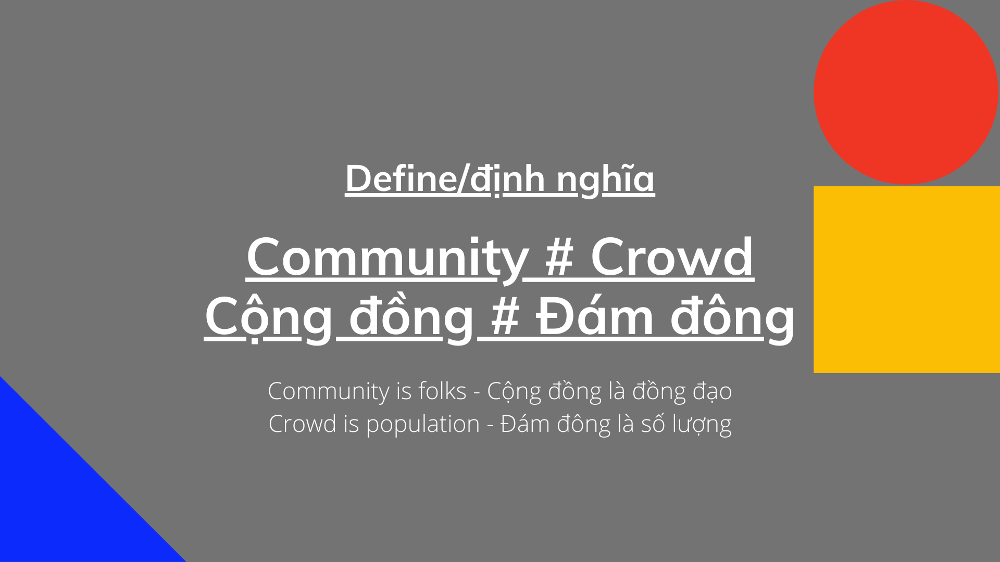

Tạo Cộng Đồng Hay Tạo Đám Đông
Trong thế giới internet, những người làm sản phẩm, có một câu thường được nói: ‘Ai có cộng đồng người ấy thắng’. Quan niệm này đã lan rộng ra đến cả những người xây dựng thương hiệu cá nhân, buôn bán sản phẩm nhỏ lẻ offline lẫn online. Ai cũng nói rằng: Phải xây dựng cộng đồng.
Nhưng trước hết, chúng ta hãy cùng nhau tự trả lời: Như thế nào là cộng đồng?
Là con người, chúng ta là một sinh vật sống theo nhóm (hay còn gọi là bầy đàn :D). Tức là chúng ta không thể trở thành ngày hôm nay nếu không cộng sinh theo nhóm. Nhưng một khả năng khiến con người khác với những loài sinh vật sống theo nhóm (ví dụ kiến, ong, sói…) đấy là khả năng: Có niềm tin tưởng tượng.
Niềm tin tưởng tượng này là một hệ giá trị, mà những con người ở đó chia chung với nhau. Cái gì là đúng, cái gì là sai, cái gì là nên, không nên… Họ hành xử với nhau, theo đuổi, thực hành… và trở thành một thứ: Văn hóa.
Nếu như vậy, để tạo ra một cộng đồng, tối thiểu phải có ba thứ: Số lượng (số nhiều) - giá trị cốt lõi - văn hóa.
Quay trở lại, vậy liệu bao nhiêu trong số những người xây dựng cộng đồng (community builder) đã tạo ra được cộng đồng?
Ở Việt Nam (và cả thế giới), có rất nhiều cộng đồng (theo cách gọi của người tạo ra) có hàng triệu, thậm chí hàng chục, hàng trăm triệu thành viên. Họ sống, ăn, ngủ… trên cái cộng đồng đó… thậm chí sinh hoạt ở đó còn nhiều hơn cả đời sống cá nhân.
Nhưng theo mình, ở đó, là đám đông (hoặc thậm chí nếu quá lời, có thể gọi đó là: bầy đàn). Bởi nó chỉ có số lượng, mà không có giá trị cốt lõi và văn hóa. Số những 'cộng đồng’ thực sự tạo ra cộng đồng, rất ít.
Nếu nói kỹ hơn, bảo ở đó không có giá trị cốt lõi thì cũng không đúng hoàn toàn. Nhưng giá trị ở đó, theo cách gọi của mình là: Giá trị linh tinh. Không nhất quán và đồng đạo. Giá trị cá nhân, hay đúng hơn là cái tôi của mỗi người ở đó được dẫn dắt. Hơn là giá trị của cộng đồng.
Nếu một 'cộng đồng’ mà mỗi người ở đó lấy cá nhân lên trên giá trị cộng đồng. Thì theo mình, đó không phải là cộng đồng. Mà chỉ là một đám đông.
Một đám đông có 'tâm lý đám đông’ nhưng một cộng đồng có 'văn hóa cộng đồng’ đó. Điều khiển tâm lý đám đông (theo một hướng mà đám đông đó không muốn) là vô cùng khó, nhưng tác động vào văn hóa của một cộng đồng thì dễ hơn.
Trong lịch sử loài người, chúng ta đã chứng kiến những cộng đồng tưởng tượng xuất hiện từ sớm: tôn giáo, dòng tộc, đơn vị địa lý (làng xã - quận huyện - quốc gia…)… Và chính vì nó đã hình thành từ rất sớm, cho nên những gì ở thời điểm hiện đại (dù là hữu hình vật lý hay thế giới internet). Nó cũng tuân theo những quy luật chung ấy, chẳng có gì khác.
Muốn xây dựng được cộng đồng, hãy quan sát và tìm hiểu cách mà những cộng đồng đã được hình thành, phát triển và vận hành. Bao gồm cả những đám đông đã thất bại để trở thành cộng đồng, trong lịch sử.
Nói như thế, không có nghĩa là đám đông là vô nghĩa. Có lẽ, sức mạnh là: Hiệu triệu được đám đông - và biến chuyển thành cộng đồng.
Chủ đề này, quá rộng để nói trong phạm vi hạn hẹp. Có thời gian sẽ đề cập thêm.
—-
Về Chuyện Cộng Đồng Folks.group
Hình mình đính kèm bên dưới, là một định nghĩa để phân định: Đám Đông Và Cộng Đồng trong định hướng của Folks.
Nói một cái đơn giản, niềm tin của mình (và Folks) là:
- Cộng đồng là những đồng đạo (tức có chung mục đích, niềm tin, giá trị, văn hóa…) dù ít dù nhiều.
- Đám đông là một con số.
Vì thế, việc xây dựng một cộng đồng, khác hoàn toàn việc tạo ra một đám đông.
Ở Folks, mình mong muốn xây dựng một cộng đồng (nhưng phát huy cả lợi thế của đám đông: số lượng & cảm xúc, rồi dần dần biến chuyển đám đông ấy thành cộng đồng). Tất nhiên, từ mong muốn đến làm được còn là một chặng đường quá xa xôi. Nhưng ít nhất, cần làm rõ: vậy thì mình muốn gì.
Folks phát huy Đám Đông: thông qua Crowdsourcing - thứ mạnh nhất của Folks (www.compassion.vn/crowdsourcing)
Và biến chuyển thành Cộng Đồng - mưu cầu một cuộc sống hạnh phúc (www.folks.group).
Nếu ai biết lịch sử của Folks - sẽ biết rằng, chúng tôi đã ngưng/kìm hãm sự phát triển của một số đám đông có quy mô khá lớn - bởi nó không có cơ hội trở thành một cộng đồng được, mà cũng chẳng phát huy được sức mạnh ở số lượng, để tạo ra thứ gì tốt đẹp hơn.